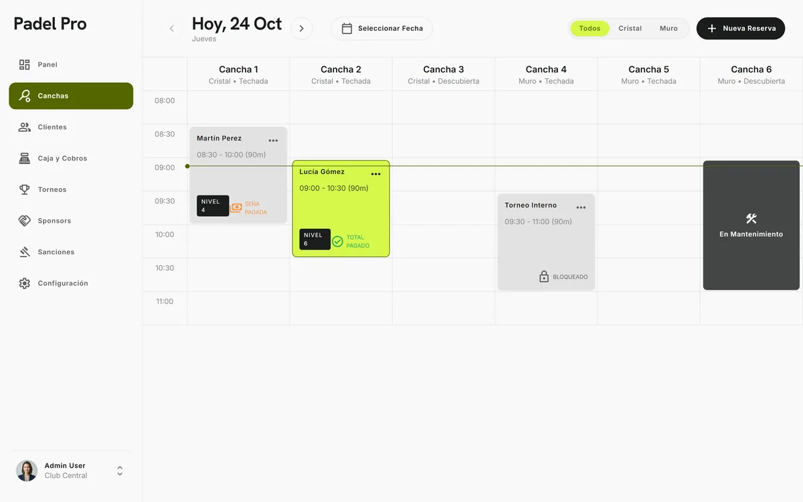
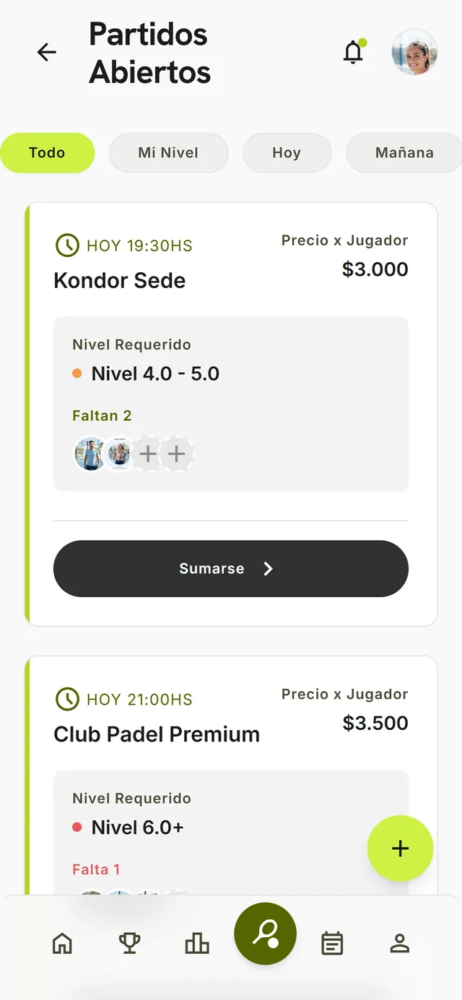
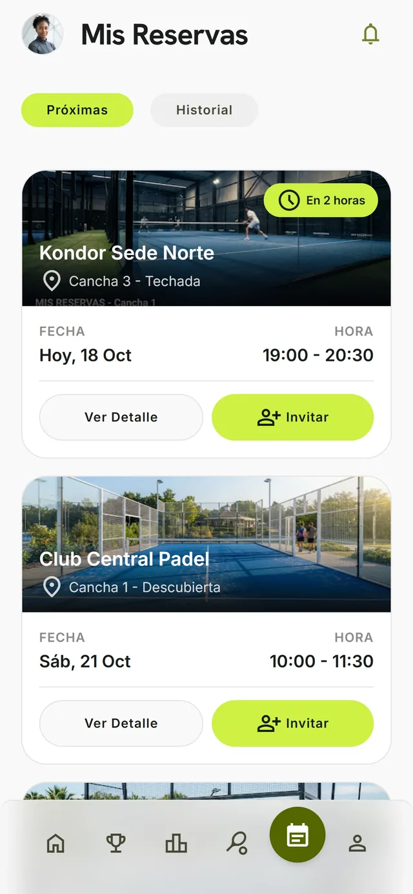

Booking platform
Padel Hub Mendoza
From messaging the club to a booked court in four steps, and one view of the day for whoever runs it.



Project overview
- Industry
- Sports and bookings
- Product
- Responsive web platform: player app and club dashboard
- My role
- UX/UI and front-end development
- Responsibilities
- Booking flows, player and club experiences, tokens, React implementation and QA
- Team
- Two people: Lucía Miranda and Álvaro González, who wrote the initial build and the tournaments module
- Timeline
- August – October 2026
- Tools
- React, Vite, Tailwind CSS, Supabase
- Status
- Working demo with sample data. Payment is simulated and there is no club pilot yet
In the demo the product appears under its working name, Padel Pro. Tournaments need a connected backend, so the demo shows them empty.
In one minute
Problem
Bookings, registrations and delays were handled over WhatsApp, one person at a time. Players didn’t know what was free and clubs kept two versions of the same day.
Approach
Two connected experiences with one source of availability. The player makes one decision per step; the club sees who plays, who paid and which courts are blocked in the same grid.
Outcome
25 screens built in React, light and dark themes and a demo anyone can use without an account. What isn’t built is listed as clearly as what is.
01The challenge
Padel in Mendoza runs on WhatsApp.
The systems in use fail at exactly what happens on a real court: a club with two venues enters everything twice, the back court has no signal and every delay is announced one person at a time.
Players
- Message to ask whether they are registered
- Have no one to play with when they go alone
- Find tournament photos in folders shared over chat
Clubs
- Build fixtures by hand in a spreadsheet
- Duplicate data across venues
- Chase payments and confirmations
Constraints
- Used courtside: poor signal, at night
- Small clubs and clubs with several venues
- Payments with Mercado Pago and transfer
02Research & discovery
Two questions, one product.
The player asks “when do I play, and with whom?”. The club asks “how do I organize without the back and forth?”. What one does feeds the other.
Evidence
What was known
- Bookings and changes are resolved by message
- Each club applies its own criteria to set categories
- Full payment in advance discourages booking; no payment leaves empty courts
Assumptions
What was designed as a hypothesis
- A 30% deposit balances both sides
- Showing the level makes open matches worth joining
- The next booking is what people open the app for
Still open
What real use has to confirm
- Time to book, with real players
- The dashboard with an organizer’s real data
- A pilot with a club before opening it
03User journeys & flows
One decision per step.
Step 1
Day and courtCovered or open, glass or wallStep 2
Free slotTaken ones are dimmed, not hiddenStep 3
ExtrasRackets and balls, optionalStep 4
30% depositThe rest is paid at the club, with the exact amountIn the club
It appears in the timelinePlayer, level and payment state
Two information architectures
| Experience | Sections | First thing on screen |
|---|---|---|
| Player, mobile first | Home, Tournaments, Ranking, Matches, My bookings, Profile | The next booking: venue, court and time |
| Club, desktop first | Panel, Courts, Clients, Cash, Tournaments, Sponsors, Penalties, Settings | Occupancy, income and next slots |
Exceptions
| Situation | Answer |
|---|---|
| The slot was taken | It stays visible and dimmed, so real availability is understood |
| A court is under maintenance | A solid block in the timeline, different from a booking |
| The player only paid the deposit | “Deposit paid” and “total paid” have their own label |
| A match runs late | Following slots are rescheduled and players are notified |
| A client owes money | The debt is written next to the name, with a direct WhatsApp contact |
04Design exploration
From static screens to a system that runs.
The project started in August 2026 with a set of static screens. From there we consolidated one token set, rebuilt every screen in React and corrected what only shows up when it is used.
- Menus hidden under cards and a registration crash, found in a general QA pass
- Tournament dates shown a day early because of the time zone
- Notifications and settings redesigned as dropdowns, and dark mode corrected
Problem
Bookings nobody shows up for
Charging everything slows booking; charging nothing leaves courts empty.
Decision
A 30% deposit online
The club secures the slot and the player doesn’t pay everything up front. The screen separates total, deposit and balance.
Problem
Uneven matches
Joining a match at another level spoils the game for four people.
Decision
Required level on every card
Level range, price per player and spots left, with filters for “my level”, today and tomorrow.
Problem
Opening the app just to remember
The most frequent question is “when do I play?”.
Decision
The next booking takes the lead
Home opens with it, followed by two large shortcuts: book or join a match.
Problem
Every club ranks differently
In practice each one applies its own criteria.
Decision
Two rankings
The club chooses the official ranking or its own.
What it cost: two sources to explain to players.
05Design system
Lime marks what to do. Everything else stays quiet.
One token set drives both experiences and both themes. The names describe the function, so the dark theme changes values and not components.
Color
- primary-container
#D4F84A - primary
#536600 - text-primary
#111111 - on-surface-variant
#454935 - surface
#F9F9F9 - status-ok
#27AE60 - status-pending
#F2994A - status-error
#EB5757
Contrast audit
| Pair | Sample | Ratio | Result |
|---|---|---|---|
| Ink on lime (main action) | 15.58:1 | AAA | |
| Olive on surface (links) | 6.10:1 | AA | |
| Secondary text on surface | 3.28:1 | Large text and icons only Replace with on-surface-variant | |
| Status “ok” on white | 2.87:1 | Not for text Pair it with an icon and darker text |
Type and components
- Hanken Grotesk for headings, Inter for reading
- Slot: free, selected, taken, with promotion. Four states that don’t rely on color alone
- Fixed bar at the bottom with the amount and the main action
- Court grid: one column per court, one row per half hour
06Final solution
The player in four steps, the club in one view.

Next booking And two ways to play. 
Time Free, taken and selected at a glance. 
Summary Total, deposit and what is paid at the club. 
Open matches Level, price and spots left. 
My bookings Invite from the same card.


07Implementation & collaboration
Design QA on the running product.
Being on both sides meant that a design fix and its implementation were the same conversation, and often the same commit.
- React, Vite and Tailwind, with tokens as CSS variables for light and dark
- Accounts, database and role permissions in Supabase: 12 migrations in the repository
- A demo mode by default, so that anyone can review the product without an account or backend
Built
- Bookings with deposit, open matches by level, match chat and profile
- Tournaments: calendar, registration, fixture and ranking
- Club: daily overview, court timeline, clients and cash
Not built yet
- Real Mercado Pago checkout (it is simulated)
- Offline score entry
- WhatsApp notifications
08Outcomes & impact
A product anyone can try.
- 2connected experiences: player and club
- 25screens taken to React
- 4steps to book a court
- 2themes with the same components
There are no usage metrics: the platform hasn’t been piloted with a club.
09Learnings & next steps
Think about the court, not about the screen.
Learnings
- What makes these platforms fail (signal, delays, several venues) doesn’t show up in a mockup
- Being explicit about what is done and what isn’t builds trust with the client
- A demo mode is a design tool: it lets someone else find the problem
Next steps
- Test the booking flow with players and measure how long it takes
- Try it in a real tournament before opening it
- Fix secondary text contrast and unify the name Padel Hub in the interface